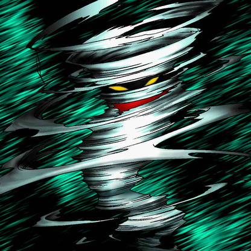

Hurricail

Description: "When this card is flipped face-up, all spells within a range of a single space are destroyed."
STATS
ATK: 900
DEF: 200DECK COST
Deck Cost per Card: 16EFFECT NOT IMPLEMENTED
Fusion List (9 Possible Fusions)
- Hurricail + Bone Mouse = Magical Ghost
- Hurricail + Corroding Shark = Magical Ghost
- Hurricail + Electric Snake = The Immortal of Thunder
- Hurricail + Fire Reaper = Magical Ghost
- Hurricail + Mech Mole Zombie = Magical Ghost
- Hurricail + Monsturtle = 30,000-Year White Turtle
- Hurricail + Mystic Lamp = Lord of the Lamp
- Hurricail + Shadow Specter = Magical Ghost
- Hurricail + Zombie Warrior = Magical Ghost